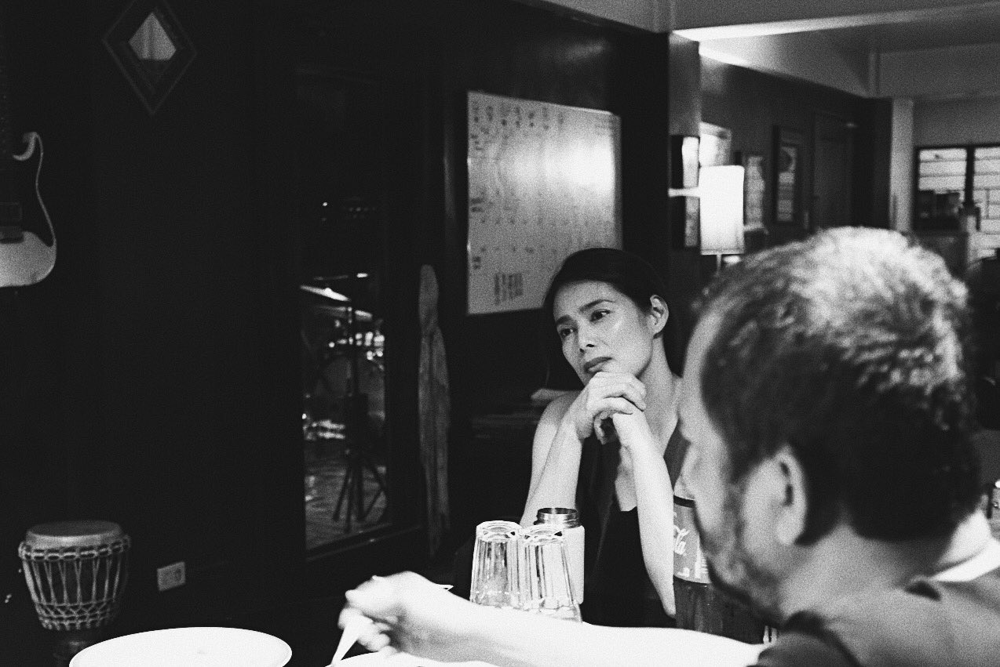

Just A Curious Flame in the Lantern of Creativity
The town sleeps, the mind wanders...
I’ve never been the creative type, but I’ve always been fascinated by art.
The way ideas come to life, the stories behind every piece—it makes me wonder how it’s all done.
So, I’m here, exploring, learning, and figuring things out along the way.